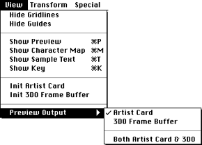

Figure 1: FontWriter View menu.
Table 1 lists the FontWriter View menu commands.
Table 1: FontWriter View menu commands.
---------------------------------------------------------
Command |Description
---------------------------------------------------------
Show/Hide |Shows/hides gridlines the size of the
Gridlines |individual font pixels.
---------------------------------------------------------
Show/Hide Guides |Shows/hides the lines indicating font
|baseline and character width.
---------------------------------------------------------
Show/Hide Preview |Shows/hides the Preview window.
---------------------------------------------------------
Show/Hide Sample |Shows/hides the Sample Text window.
Text |
---------------------------------------------------------
Show/Hide |Shows/hides a window that displays all
Character Map |characters in the font. If you select
|a character in that map, it appears in
|the edit region of the Character Edit
|window.
---------------------------------------------------------
Show/Hide Key |Shows/hides a window with information
|about font terminology.
---------------------------------------------------------
Init Artist Card |Clears the TV monitor screen by
|initializing the Artist Card.
---------------------------------------------------------
Init 3DO Frame |Clears the TV monitor screen by
Buffer |clearing the frame buffer into which
|fonts are displayed on the 3DO
|Station.
---------------------------------------------------------
Preview Output |Determines the output for the text in
|the sample text window when previewing
|on the TV screen. You can select the
|target (Artist Card or 3DO Station)
|from the submenu.
---------------------------------------------------------